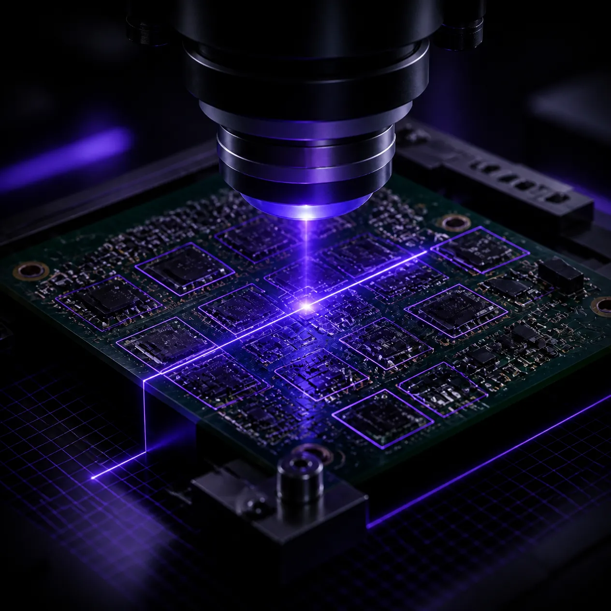

Review against defined criteria
Teams may want to review board images against criteria they define.
PCB INSPECTION
A proposed visual-inspection product concept for printed circuit boards. Scope, supported components, and operating requirements are to be confirmed.
Concept stage. Availability to be confirmed.
Teams may want to review board images against criteria they define.
Whether PCB Guardian supports a particular board, defect class, camera, or production line must be confirmed with FrameIQ.
Agree the inspection criteria and representative image set.
Review a proposed vision workflow against those criteria.
Discuss how any result would be reviewed and routed in the customer's environment.


Typical reviews cover solder, trace, placement, and board-condition issues on representative assemblies.
High-resolution board imagery, stable lighting, and a defined review workflow are central to practical inspection use cases.
Ops teams often want a workflow that routes exceptions to review, QA, or downstream manufacturing steps.
Answers to questions about the PCB Guardian concept.
Contact UsSupported defect classes are to be confirmed during product scoping.